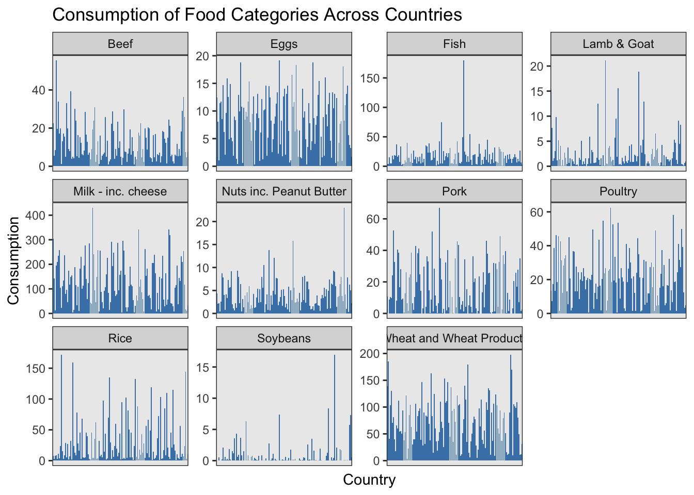

#Download Food Consumption and CO2 Emissions Datasetfood_consumption <- readr::read_csv('https://raw.githubusercontent.com/rfordatascience/tidytuesday/main/data/2020/2020-02-18/food_consumption.csv')food_consumption
# A tibble: 1,430 × 4
country food_category consumption co2_emmission
<chr> <chr> <dbl> <dbl>
1 Argentina Pork 10.5 37.2
2 Argentina Poultry 38.7 41.5
3 Argentina Beef 55.5 1712
4 Argentina Lamb & Goat 1.56 54.6
5 Argentina Fish 4.36 6.96
6 Argentina Eggs 11.4 10.5
7 Argentina Milk - inc. cheese 195. 278.
8 Argentina Wheat and Wheat Products 103. 19.7
9 Argentina Rice 8.77 11.2
10 Argentina Soybeans 0 0
# ℹ 1,420 more rows
Using an appropriate viz, you need to answer the following grand research question: What does the consumption of each food category in each country look like?
# Grouped By Bar Plot (Faceted by Food Category)ggplot(food_consumption, aes(x = country, y = consumption)) +geom_bar(stat ="identity", fill ="steelblue") +facet_wrap(~ food_category, scales ="free_y") +labs(title ="Consumption of Food Categories Across Countries",x ="Country",y ="Consumption" ) +theme_bw() +theme(axis.text.x =element_blank(),axis.ticks.x =element_blank())

I decided to try doing a Bar Chart Faceted by Food Category. Essentially, for each food category (faceted), you have a 11 bar charts (one per food category) where the y-axis represents countries and the x-axis represents consumption. Within each chart, you have bars for each 130 countries. This type of visualization is good for sing the diversity of consumption levels across the world. However, with 130 countries (130 bars) it makes it difficult to interpret each of the individual values and identify any particular country. If the visualization was interactive, where one could zoom in and out - that may improve it and make it more legible. While not the perfect Viz, I do think this is very useful way to display the data. In Exam #2, we take this research question further and use spatial data to create 11 maps showing the levels of consumption across the world for each of the 11 food categories.
Source Code
---title: "Exam 1"execute: echo: true warning: false error: false format: html: code-fold: true ---```{r}#Download Food Consumption and CO2 Emissions Datasetfood_consumption <- readr::read_csv('https://raw.githubusercontent.com/rfordatascience/tidytuesday/main/data/2020/2020-02-18/food_consumption.csv')food_consumption```Using an appropriate viz, you need to answer the following grand research question: What does the consumption of each food category in each country look like? ```{r}# Install Packages library(tidytuesdayR)library(tidyverse)``````{r}# Get Datatuesdata <-tt_load('2020-02-18')fc <- tuesdata$food_consumption ``````{r}# Understand Data - List some initial steps that should be carried after loading the above datasethead(fc)nrow(fc)dim(fc)str(fc)```What are the units of observations?Units: Country, Food, Category There are 11 Food Categories.There are 130 Countries. ```{r}# Grouped By Bar Plot (Faceted by Food Category)ggplot(food_consumption, aes(x = country, y = consumption)) +geom_bar(stat ="identity", fill ="steelblue") +facet_wrap(~ food_category, scales ="free_y") +labs(title ="Consumption of Food Categories Across Countries",x ="Country",y ="Consumption" ) +theme_bw() +theme(axis.text.x =element_blank(),axis.ticks.x =element_blank()) ```I decided to try doing a Bar Chart Faceted by Food Category. Essentially, for each food category (faceted), you have a 11 bar charts (one per food category) where the y-axis represents countries and the x-axis represents consumption. Within each chart, you have bars for each 130 countries. This type of visualization is good for sing the diversity of consumption levels across the world. However, with 130 countries (130 bars) it makes it difficult to interpret each of the individual values and identify any particular country. If the visualization was interactive, where one could zoom in and out - that may improve it and make it more legible. While not the perfect Viz, I do think this is very useful way to display the data. In Exam #2, we take this research question further and use spatial data to create 11 maps showing the levels of consumption across the world for each of the 11 food categories.